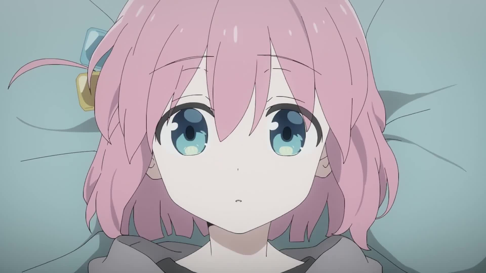
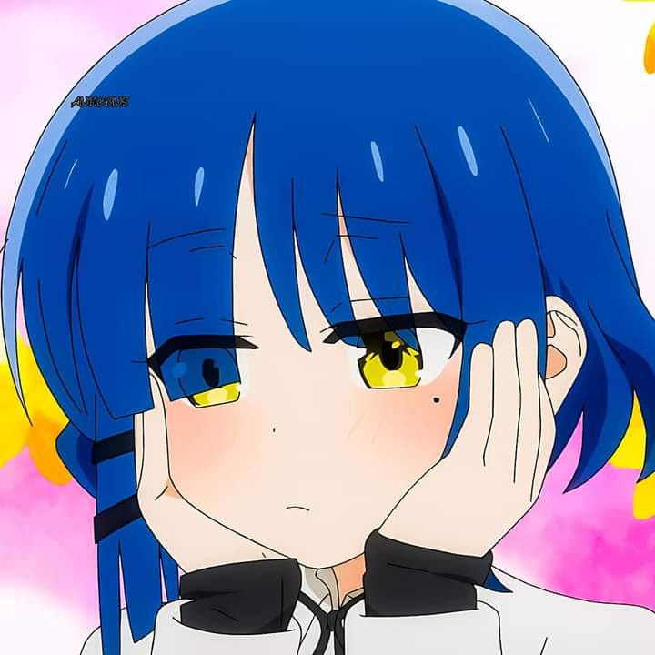

Bocchi the Rock! Fan Site
Four girls, one dream — to rock the stage!
Welcome to the ultimate Bocchi the Rock! fan site.
Meet the BandAbout the Series
Bocchi the Rock is a comedy/slice of life 4-koma manga written and illustrated by Aki Hamazi. The manga was serialized in February 2018 by MangaTime Kirara Max and currently has 7 volumes as of October 2025. In 2019 the manga received 8th place for the “Next Manga Awards” and received an anime adaption in the anime Fall season of 2022, which aired between “October 9th to December 25th”. This series has influenced others in the band genre with some works including “Girls Band Cry” and “Rock is a Lady' s Modesty”. The second season release date of Bocchi the Rock is still to be announced, with the latest teaser trailer that was posted February 2025.

That is until one day in high school she meets Nijika Ijichi an energetic girl, who is looking for a lead guitarist for her band after their other guitarist quit. Bocchi seeing this chance tries to runaway, but is dragged by Nijika back to their venue. Thus starts Bocchi’s adventures with “Kesoku Band” and the members Nijika Ijichi (Drummer), Ryo Yamada (Bassist), and Ikuyo Kita (Vocalist/Rhythm Guitarist). Through her experiences Bocchi gradually finds confidence, friendship, and a place where she truly belongs.
This fan site celebrates their journey with images, music, and profiles of each band member. Explore and enjoy!
Meet the Band


Discography
- 🎵 Kessoku Band Album (2023)
- 🎸 Guitar, Loneliness and Blue Planet – Single
- 🔥 Seishun Complex – Opening Theme
Gallery


Join the Fan Community!
Have fan art, thoughts, or questions? Contact us here!